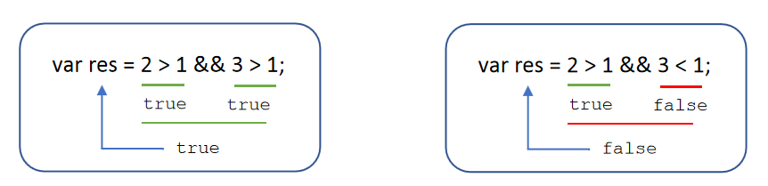

1. 计算机编程基础
1.1 编程语言
1.1.1 编程
1.==编程==：就是让计算机为解决某个问题而使用某种程序设计语言编写程序代码，并最终得到结果的过程。
2.==计算机程序==：就是计算机所执行的一系列的==指令集合==，而程序全部都是用我们所掌握的语言来编写的，所以人们要控制计算机一定要通过计算机语言向计算机发出命令。
3.从事编程的人员，就是==程序员==。 但是一般程序员都比较幽默，为了形容自己的辛苦工作，也成为“码农”， 或者 “程序猿”/ “程序媛”
4.注意：上面所定义的计算机指的是任何能够执行代码的设备，可能是智能手机、ATM机、黑莓PI、服务器等等。
1.1.2 计算机语言
1.==计算机语言==指用于==人与计算机之间通讯的语言==，它是人与计算机之间传递信息的==媒介==。
计算机语言的种类非常的多，总的来说可以分成机器语言，汇编语言和高级语言三大类。
实际上计算机最终所执行的都是 机器语言，它是由“0”和“1”组成的二进制数，二进制是计算机语言的基础。
- 计算机只认识机器语言。
0=00000000 1=00000001 2=00000010 3=00000011 4=00000100
5=00000101 6=00000110 7=00000111 8=00001000 9=00001001
10=00001010
1.1.3 编程语言
可以通过类似于人类语言的 ”语言”来控制计算机，让计算机为我们做事情，这样的语言就叫做编程语言（Programming Language）。
编程语言是用来控制计算机的一系列指令，它有固定的格式和词汇（不同编程语言的格式和词汇不一样），必须遵守。
如今通用的编程语言有两种形式：汇编语言和高级语言。
汇编语言和机器语言实质是相同的，都是直接对硬件操作，只不过指令采用了英文缩写的标识符，容易识别和记忆。
高级语言主要是相对于低级语言而言，它并不是特指某一种具体的语言，而是包括了很多编程语言，常用的有C语言、C++、Java、C#、Python、PHP、JavaScript、Go语言、Objective-C、Swift等。
1 | C语言：puts("你好"); |
1.1.4 翻译器
高级语言所编制的程序不能直接被计算机识别，必须经过转换才能被执行，为此，我们需要一个翻译器。
翻译器可以将我们所编写的源代码转换为机器语言，这也被称为二进制化。 记住1和 0。
1.1.5 编程语言与标记语言区别
1.编程语言有很强的逻辑和行为能力。在编程语言里, 你会看到很多 if else 、for 、while等具有逻辑性和行为能力的指令，这是主动的。
2.标记语言（html）不用于向计算机发出指令，常用于格式化和链接。标记语言的存在是用来被读取的, 他是被动的。
1.1.6 总结
1.计算机可以帮助人类解决某些问题
2.程序员利用编程语言编写程序发出指令控制计算机来实现这些任务
3.编程语言有机器语言、汇编语言、高级语言
4.高级语言需要一个翻译器转换为计算机识别的机器语言
5.编程语言是主动的有很强的逻辑性
1.2 计算机基础
1.2.1 计算机组成
1.2.2 数据存储
1.计算机内部使用二进制 0 和 1来表示数据。
2.所有数据，包括文件、图片等最终都是以二进制数据（0 和 1）的形式存放在硬盘中的。
3.所有程序，包括操作系统，本质都是各种数据，也以二进制数据的形式存放在硬盘中。平时我们所说的安装软件，其实就是把程序文件复制到硬盘中。
4.硬盘、内存都是保存的二进制数据。
1.2.3 存储单位
bit < byte < kb < GB < TB<…..
- 位(bit)： 1bit 可以保存一个 0 或者 1 （最小的存储单位）
- 字节(Byte)：1B = 8b
- 千字节(KB)：1KB = 1024B
- 兆字节(MB)：1MB = 1024KB
- 吉字节(GB): 1GB = 1024MB
- 太字节(TB): 1TB = 1024GB
- ……
1.2.4 程序运行
1.打开某个程序时，先从硬盘中把程序的代码加载到内存中
2.CPU执行内存中的代码
==注意==：之所以要内存的一个重要原因，是因为 cpu 运行太快了，如果只从硬盘中读数据，会浪费cpu性能，所以，才使用存取速度更快的内存来保存运行时的数据。（内存是电，硬盘是机械）
2. 初识JavaScript
1.目标：
能够说出 JavaScript 是什么
能够知道 JavaScript 的发展历史
能够说出浏览器执行 JavaScript 的原理
能够说出 JavaScript 由哪三部分组成
能够写出 JavaScript 三个输入输出语句
2.1 初识js
2.1.1 JavaScript 历史
- 布兰登·艾奇（Brendan Eich，1961年～）。
- 神奇的大哥用10天完成 JavaScript 设计。
- 最初命名为 LiveScript，后来在与 Sun 合作之后将其改名为 JavaScript。
2.1.2 JavaScript 是什么
- JavaScript 是世界上最流行的语言之一，是一种运行在客户端的脚本语言 （Script 是脚本的意思）
- 自己的电脑，客户端；远程接收请求的是服务器；
- 脚本语言：不需要编译，运行过程中由 js 解释器( js 引擎）逐行来进行解释并执行
- 现在也可以基于 Node.js 技术进行服务器端编程
- 既可以做前端，也可以做后端；
2.1.3 JS的作用
- 表单动态校验（密码强度检测） （ JS 产生最初的目的 ）
- 以前，输入不合格的数据，例如：要求数字结构，输入字母；
- 也要送往后台，后台验证后，把不合格打回
- 增加了后端的压力；
- 网页特效
- 服务端开发(Node.js)
- 桌面程序(Electron)
- App(Cordova)
- 控制硬件-物联网(Ruff)
- 游戏开发(cocos2d-js)
2.1.4 HTML/CSS/JS 的关系
1.HTML/CSS 标记语言–描述类语言
- HTML 决定网页结构和内容( 决定看到什么 )，相当于人的身体
- CSS 决定网页呈现给用户的模样( 决定好不好看 )，相当于给人穿衣服、化妆
2.JS 脚本语言–编程类语言
- 实现业务逻辑和页面控制( 决定功能 )，相当于人的各种动作
2.1.5 浏览器执行js简介
浏览器分成两部分：渲染引擎和 JS 引擎
- 渲染引擎：用来解析HTML与CSS，俗称内核，比如 chrome 浏览器的 blink ，老版本的 webkit
- JS 引擎：也称为 JS 解释器。 用来读取网页中的JavaScript代码，对其处理后运行，比如 chrome 浏览器的 V8
浏览器本身并不会执行JS代码，而是通过内置 JavaScript 引擎(解释器) 来执行 JS 代码 。JS 引擎执行代码时逐行解释每一句源码（转换为机器语言），然后由计算机去执行，
所以 JavaScript 语言归为脚本语言，会逐行解释执行。
2.1.6 JS的组成
1.JS基础，学习的是ECMAScript，js语法
2.JS-API，学习的是dom与bom；
1. ECMA
1.什么是ECMA？
- ECMAScript 是由ECMA 国际（ 原欧洲计算机制造商协会）进行标准化的一门编程语言，这种语言在万维网上应用广泛，它往往被称为 JavaScript 或 JScript，但实际上后两者是 ECMAScript 语言的实现和扩展。
- ECMAScript：ECMAScript 规定了JS的编程语法和基础核心知识，是所有浏览器厂商共同遵守的一套JS语法工业标准。
- 更多参看MDN: https://developer.mozilla.org/zh-CN/docs/Web/JavaScript/JavaScript_technologies_overview
2. DOM
1.DOM ——文档对象模型
2.文档对象模型（Document Object Model，简称DOM），是==W3C==组织推荐的处理可扩展标记语言的==标准编程接口==。通过 DOM 提供的接口可以对页面上的各种元素进行操作（大小、位置、颜色等）。
3. BOM
- BOM ——浏览器对象模型
- BOM (Browser Object Model，简称BOM) 是指浏览器对象模型，它提供了独立于内容的、可以与浏览器窗口进行互动的对象结构。通过BOM可以操作浏览器窗口，比如弹出框、控制浏览器跳转、获取分辨率等。
- 例如，滑动右侧滚动条，到一定的地方（或者说滑到一定的高度）弹出一个窗口
2.1.7 JS初体验
JS 有3种书写位置，分别为行内、内嵌和外部。
1. 行内式 JS
<input type="button" value="点我试试" onclick="alert('Hello World')" />
- 可以将单行或少量 JS 代码写在HTML标签的事件属性中（以 on 开头的属性），如：onclick
- 注意单双引号的使用：在HTML中我们推荐使用双引号, JS 中我们推荐使用单引号
- 可读性差， 在html中编写JS大量代码时，不方便阅读；
- 引号易错，引号多层嵌套匹配时，非常容易弄混；
- 特殊情况下使用
2. 内嵌 JS
1 | <script> |
- 可以将多行JS代码写到
<script>标签中 - 内嵌 JS 是学习时常用的方式
3. 外部 JS文件
<script src="my.js"></script>
- 利于HTML页面代码结构化，把大段 JS代码独立到 HTML 页面之外，既美观，也方便文级别的复用
- 引用外部 JS文件的 script 标签中间不可以写代码
<script src="my.js">1123</script>不能在这个地方写1123，当然其他的也不能写
- 适合于JS 代码量比较大的情况
2.2 JS注释
2.2.1 单行注释
为了提高代码的可读性，JS与CSS一样，也提供了注释功能。JS中的注释主要有两种，分别是单行注释和多行注释。
单行注释的注释方式如下：
// 我是一行文字，不想被 JS引擎 执行，所以 注释起来
// 用来注释单行文字（ 快捷键 ctrl + / ）
2.2.2 多行注释
多行注释的注释方式如下：
1 | /* |
/* */ 用来注释多行文字（ 默认快捷键 alt + shift + a ）
快捷键修改为： ctrl + shift + /
vscode → 首选项按钮 → 键盘快捷方式 → 查找 原来的快捷键 → 修改为新的快捷键 → 回车确认
2.3 JavaScript 输入输出语句
为了方便信息的输入输出，JS中提供了一些输入输出语句，其常用的语句如下：
| 方法 | 说明 | 归属 |
|---|---|---|
| alert(msg) | 浏览器弹出警示框 | 浏览器 |
| console.log(msg) | 浏览器控制台打印输出信息 | 浏览器 |
| prompt(info) | 浏览器弹出输入框，用户可以输入 | 浏览器 |
注意：alert() 主要用来显示消息给用户，console.log() 用来给程序员自己看运行时的消息。
3. 变量
目标：
能够说出变量的主要作用
能够写出变量的初始化
能够说出变量的命名规范
能够画出变量是如何在内存中存储的
能够写出交换变量案例
3.1 变量的概述
3.1.1 什么是变量
白话：变量就是一个装东西的盒子。
通俗：变量是用于存放数据的==容器==。 我们通过 ==变量名== 获取数据，甚至数据可以修改。
3.1.2 变量在内存中的存储
本质：变量是程序在内存中申请的一块用来存放数据的空间。
类似我们酒店的房间，一个房间就可以看做是一个变量。
<../img src=”../../img/25/8.png” alt=”8” style=”zoom:80%;” />
- 变量由：num2（变量名）+ 6（向内存申请的空间）组成的；
3.2 变量的使用
变量在使用时分为两步： 1. 声明变量 2. 赋值
3.2.1 声明变量
1 | // 声明变量 |
- ==var== 是一个 JS关键字，用来声明变量( variable 变量的意思 )。使用该关键字声明变量后，计算机会自动为变量分配内存空间，不需要程序员管
- age 是程序员定义的变量名，我们要通过变量名来访问内存中分配的空间
3.2.2 赋值
age = 10; // 给 age 这个变量赋值为 10
- = 用来把右边的值赋给左边的变量空间中，此处代表赋值的意思
- 变量值是程序员保存到变量空间里的值
3.2.3 变量的初始化
var age = 18; // 声明变量同时赋值为 18
声明一个变量并赋值， 我们称之为==变量的初始化==。
3.2.4 案例
1.弹出一个输入框，提示用户输入姓名。
2.弹出一个对话框，输出用户刚才输入的姓名。
3.代码：
1 |
|
3.3 变量语法扩展
3.3.1 更新变量
一个变量被重新复赋值后，它原有的值就会被覆盖，变量值将以最后一次赋的值为准。
1 | var age = 18; |
声明过的变量不需要再次声明。
原理：内存空间已经开辟与分配，并取名为age，所以再次使用这片空间，直接用变量名 age 即可；
3.3.2 同时声明多个变量
同时声明多个变量时，只需要写一个 var， 多个变量名之间使用英文逗号隔开。
1 | <script> |
- 逗号隔开
也可以一排：
var age = 10, name = 'zs', sex = 2;
3.3.3 声明变量的特殊情况
| 情况 | 说明 | 结果 |
|---|---|---|
| var age ; console.log (age); | 只声明 不赋值 | undefined |
| console.log(age) | 不声明 不赋值 直接使用 | 报错 |
| age = 10; console.log (age); | 不声明 只赋值 | 10 |
只声明 不赋值，程序也不知道是什么 = 未定义(undefined)
不声明 不赋值 直接使用 , vscode里不会保存，F12里能看到会报错
1
2Uncaught ReferenceError: tset is not defined
at index3.html:13不声明 只赋值，可以使用，默认为全局变量；
3.4 变量命名规范
由字母(A-Za-z)、数字(0-9)、下划线(_)、美元符号( $ )组成，如：usrAge, num01, _name
严格区分大小写。var app; 和 var App; 是两个变量
不能 以数字开头。 18age 是错误的
不能 是关键字、保留字。例如：var、for、while
- 它们本身已经有了特殊的意义，能被申明就会破坏语言逻辑；
- 变量名必须有意义： nl(nianling) → age
- 如果要写中文，就得拼全: xb = xiaBan;
遵守驼峰命名法。首字母小写，后面单词的首字母需要大写。 myFirstName
不要用name作为变量名。
虽然不是关键字 或 保留字，但本身不是未定义；
验证：
1
2
3
4<script>
console.log(tel);
console.log(name);
</script>只有console.log(tel)报错：
Uncaught ReferenceError: tset is not defined
7.1 而且百度一下，有很多 使用 name 作为 变量名，出错的情况；
3.4.2 案例
一下哪些是合法的变量名？
1-2. 不能数字开头
1-4. 不能数字开头
2-4. 没有安排&符号，估计不是开头也不行
3-2. 中间不能空格
3-4. 关键字了
| 第一组 | 第二组 | 第三组 |
|---|---|---|
| var a | var userName | var thwWorld |
| var 1==×== | var $name | var the world==×== |
| var age18 | var _sex | var the_world |
| var 18age==×== | var &sex==×== | var for==×== |
3.5 案例
要求：交换两个变量的值 ( 实现思路：使用一个 临时变量 用来做中间存储 )
1.自写：
1 |
|
2.资料：
<../img src=”../../img/25/10.png” alt=”10” style=”zoom:90%;” />
1 | <script> |
3.6 小结
| 为什么需要变量？ | 因为我们一些数据需要保存，所以需要变量 |
|---|---|
| 变量是什么？ | 变量就是一个容器，用来存放数据的。方便我们以后使用里面的数据 |
| 变量的本质是什么? | 变量是内存里的一块空间，用来存储数据。 |
| 变量怎么使用的？ | 1.我们使用变量的时候，一定要声明变量，然后赋值 2.声明变量本质是去内存申请空间。 |
| 什么是变量的初始化？ | 声明变量并赋值我们称之为变量的初始化 |
| 变量命名规范有哪些？ | 这个多了，详见上面3.4 变量命名规范 |
| 交换2个变量值的思路？ | 1. 我们需要一个临时变量帮我们 2. 把 a 给我们的临时变量 c 3. 把 b 里面的苹果给 a 4. 把 c 里面的值 给 b |
3.x 参考资料
- PPT 与 PDF：https://wws.lanzous.com/itsU2gol10h
4. 数据类型
4.1 目标
能够说出5种简单数据类型
能够使用 typeof 获取变量的类型
能够说出12种转换为数值型的方法2种转换为字符型的方法
能够说出1
能够说出什么是隐式转换
4.2 数据类型简介
4.2.1 为何需要数据类型
1.在计算机中，不同的数据所需占用的存储空间是不同的，为了便于把数据分成所需内存大小不，同的数据，充分利用存储空间，于是定义了不同的数据类型。
2.简单来说，数据类型就是数据的类别型号。比如姓名“张三”，年龄18，这些数据的类型是不一样的。
4.2.2 变量的数据类型
1.变量是用来存储值的所在处，它们有名字和数据类型。变量的数据类型决定了如何将代表这些值的位存储到计算机的内存中。==JavaScript 是一种弱类型或者说动态语言==。这意味着不用提前声明变量的类型，在程序运行过程中，类型会被自动确定。
1 | var age = 10; // 这是一个数字型 |
2.在代码运行时，变量的数据类型是由 JS引擎 根据 = 右边变量值的数据类型来判断 的，运行完毕之后， 变量就确定了数据类型。
3.JavaScript 拥有动态类型，同时也意味着相同的变量可用作不同的类型：
1 | var x = 6; // x 为数字 |
- 即使刚才给了6（数字），也能马上换一个”bill”（字符串）
4.无法提前确认变量是什么类型，如果没有值。不像java，申明时就确定了类型：
int num = 10; java
4.2.3 分类
1.JS 把数据类型分为两类：
- 简单数据类型 （Number,String,Boolean,Undefined,Null）
- 复杂数据类型 （object)
4.3 简单数据类型
4.3.1 基本数据类型
1.简单数据类型也可以称为基本数据类型
2.JavaScript 中的简单数据类型及其说明如下：
| 简单数据类型 | 说明 | 默认值 |
|---|---|---|
| Number | 数字型，包含 整型值 和 浮点型值，如21、0.21 | 0 |
| Boolean | 布尔值类型，只有true、false，等价于1和0 | false |
| String | 字符串类型，如“张三” 。注意js里面，字符串都带引号 | “” |
| Undefined | var a; 声明变量a但没有给值，此时 a = undefined | undefined |
| Null | var a = null; 声明了变量a 为空值 | null |
4.3.2 数字型 Number
JavaScript 数字类型既可以用来保存整数值，也可以保存小数(浮点数）。
1 | var age = 21; // 整数 |
1. 进制
最常见的进制有二进制、八进制、十进制、十六进制。
1 | // 1.八进制数字序列范围：0~7 |
现阶段我们只需要记住，在JS中八进制前面加0，十六进制前面加 0x
- 好像A~F，也可以小写。没有强求吧？
2. 数字型范围
1.JavaScript中数值的最大和最小值
1 | alert(Number.MAX_VALUE); // 1.7976931348623157e+308 |
最大值：Number.MAX_VALUE，这个值为： 1.7976931348623157e+308
- E数是在科学计数上的一种数量控制,能够将数据计数并表示，使计数更加的规律性和代表性，即7×10^4=7E4。用指数表示法显示数字，以 E+n 替换部分数字，其中 E（代表指数）表示将前面的数字乘以 10 的 n 次幂。
最小值：Number.MIN_VALUE，这个值为：5e-32
3. 三个特殊值
1.数字型的三个特殊值
1 | alert(Infinity); // Infinity |
Infinity ，代表无穷大，大于任何数值
-Infinity ，代表无穷小，小于任何数值
NaN ，Not a number，代表一个非数值
4. isNaN()
用来判断一个变量是否为非数字的类型，返回 true 或者 false
1 | var usrAge = 21; |
4.3.3 字符串型 String
0.别叫成字符型了；（视频里面说的
字符串型可以是引号中的任意文本，其语法为 双引号 “” 和 单引号’’
1 | var strMsg = "我爱北京天安门~"; // 使用双引号表示字符串 |
- 用了字符串，不加引号是不行的，代码语法里面没有分类这些数据，会被以为是代码
- 简称，无效代码；
因为 HTML 标签里面的属性使用的是双引号，JS 这里我们更推荐使用单引号。
1.即使是’12’，’true’。
- 原本是其他类型的数据，加了单引号或双引号，也是字符串类型；
1. 嵌套
1.字符串引号嵌套
2.JS 可以用单引号嵌套双引号 ，或者用双引号嵌套单引号 (外双内单，外单内双)
1 | var strMsg = '我是"高帅富"程序猿'; // 可以用''包含"" |
2. 字符串转义符
类似HTML里面的特殊字符，字符串中也有特殊字符，我们称之为转义符。
转义符都是 \ 开头的，常用的转义符及其说明如下：
| 转义符 | 解释说明 |
|---|---|
| \n | 换行符，n 是 newline 的意思 |
| \ \ | 斜杠 \ |
| \‘ | ‘ 单引号 |
| \“ | ”双引号 |
| \t | tab 缩进 |
html的空格是
空格，后来实验了一下：
console.log('asd\xa0ssd'+'asd\basd'+'asd asd');- 只有\xa0，才有效
2.1 案例-弹出网页警示框
1
2
3<script>
alert('酷热难耐，火辣的太阳底下，我挺拔的身姿，成为了最为独特的风景。\n我审视四周，这里，是我的舞台，我就是天地间的王者。\n这一刻，我豪气冲天，终于大喊一声："收破烂啦～"');
</script>
3. 字符串长度
1.字符串是由若干字符组成的，这些字符的数量就是字符串的长度。通过字符串的 length 属性可以获取整个字符串的长度。
var strMsg = "我是帅气多金的程序猿！"; alert(strMsg.length); // 显示 11 <!--hexoPostRenderEscape:<figure class="highlight awk"><table><tr><td class="gutter"><pre><span class="line">1</span><br><span class="line">2</span><br><span class="line">3</span><br><span class="line">4</span><br><span class="line">5</span><br><span class="line">6</span><br><span class="line">7</span><br><span class="line">8</span><br><span class="line">9</span><br><span class="line">10</span><br><span class="line">11</span><br><span class="line">12</span><br><span class="line">13</span><br><span class="line">14</span><br><span class="line">15</span><br></pre></td><td class="code"><pre><span class="line"></span><br><span class="line">---</span><br><span class="line"></span><br><span class="line"><span class="comment">##### 4. 字符串拼接</span></span><br><span class="line"></span><br><span class="line">+ <span class="number">1</span>.多个字符串之间可以使用 + 进行拼接，其拼接方式为 字符串 + 任何类型 = 拼接之后的字符串</span><br><span class="line">+ <span class="number">2</span>.拼接前会把与字符串相加的任何类型转成字符串，再拼接成一个新的字符串</span><br><span class="line"></span><br><span class="line">```js</span><br><span class="line"><span class="regexp">//</span><span class="number">1.1</span> 字符串 <span class="string">"相加"</span></span><br><span class="line">alert(<span class="string">'hello'</span> + <span class="string">' '</span> + <span class="string">'world'</span>); <span class="regexp">//</span> hello world</span><br><span class="line"><span class="regexp">//</span><span class="number">1.2</span> 数值字符串 <span class="string">"相加"</span></span><br><span class="line">alert(<span class="string">'100'</span> + <span class="string">'100'</span>); <span class="regexp">//</span> <span class="number">100100</span></span><br><span class="line"><span class="regexp">//</span><span class="number">1.3</span> 数值字符串 + 数值</span><br><span class="line">alert(<span class="string">'11'</span> + <span class="number">12</span>); <span class="regexp">//</span> <span class="number">1112</span> </span><br></pre></td></tr></table></figure>:hexoPostRenderEscape-->
+ 号总结口诀：数值相加 ，字符相连
5. 字符串拼接加强
1 | console.log('pink老师' + 18); // 只要有字符就会相连 |
- 我们经常会将字符串和变量来拼接，因为变量可以很方便地修改里面的值
- 变量是不能添加引号的，因为加引号的变量会变成字符串
- 如果变量两侧都有字符串拼接，口诀“引引加加 ”，删掉数字，变量写加中间
6. 案例
1.弹出一个输入框，需要用户输入年龄，之后弹出一个警示框显示“您今年 xx 岁啦”（xx 表示刚才输入的年龄）
2.案例分析
交互编程的三个基本要素：
- 用户输入
- 程序内部处理
- 这是 输出结果
3.那么在程序中要如何实现呢？
3.1 弹出一个输入框（prompt)，让用户输入年龄（用户输入）
3.2 把用户输入的值用变量保存起来,把刚才输入的年龄与所要输出的字符串拼接 （程序内部处理）
3.3 使用alert语句弹出警示框（输出结果）
1 |
|
4.3.4 布尔型
1.布尔型 Boolean
2.布尔类型有两个值：true 和 false ，其中 true 表示真（对），而 false 表示假（错）。
布尔型和数字型相加的时候， true 的值为 1 ，false 的值为 0。
1 | console.log(true + 1); // 2 |
4.3.5 Undefined 和 Null
一个声明后没有被赋值的变量会有一个默认值 undefined ( 如果进行相连或者相加时，注意结果）
1 | var variable; |
一个声明变量给 null 值，里面存的值为空（学习对象时，我们继续研究null)
1 | var vari = null; |
- null可以与数值运算，这也是 null 与 undefined 的不同之一
4.4 获取变量数据类型
4.4.1 获取
1.获取检测变量的数据类型
- typeof 可用来获取检测变量的数据类型
1 | var num = 18; |
不同类型的返回值:
- 学了对象，就知道 为什么 typeof null 是 object;
2.这个获取数据类型，有什么用呢==？==
2.1 有些地方，会有歧义，不能明确是什么类型的数据
2.2 例如：
1
2
3var age = prompt('请输入你的年龄');
console.log(age);
console.log(typeof age);里面我们输入的是数字，但其实是字符串型。
这样避免了，有些地方你以为是数值类型，拿去做运算了，结果它是字符串类型，就会达不到程序员想要的效果。
4.4.2 字面量
1.字面量是在源代码中一个固定值的表示法，通俗来说，就是字面量表示如何表达这个值。
- 数字字面量：8, 9, 10
- 字符串字面量：’黑马程序员’, “大前端”
- 布尔字面量：true，false
2.虽然我们人类一眼能看出，或者只要学习几句话，就能明白。
- 但是，要给计算机下定义，是没这么简单的，字面量就是教计算机分辨什么是什么类型的数据；
4.5 数据类型转换
4.5.1 是什么？
1.使用表单、prompt 获取过来的数据默认是字符串类型的，此时就不能直接简单的进行加法运算，而需要转换变量的数据类型。通俗来说，就是把==一种数据类型的变量转换成另外一种数据类型==。
我们通常会实现3种方式的转换：
- 转换为字符串类型
- 转换为数字型
- 转换为布尔型
4.5.2 转换为字符串
1.转换为字符串类型
| 方式 | 说明 | 案例 |
|---|---|---|
| toString() | 转成字符串 | var num=1; alert(num.toString()); |
| String() 强制转换 | 转成字符串 | var num=1; alert(String(num)); |
| 加号拼接字符串 | 和字符串拼接的结果都是字符串 | var num =1; alert(num+ “我是字符串”); |
- toString() 和 String() 使用方式不一样。
- 三种转换方式，我们更喜欢用第三种加号拼接字符串转换方式， 这一种方式也称之为隐式转换。
2.案例
2.1 把数字型转换为字符串型
1 | var num = 10; |
4.5.3 转换为数字型（重点）
1.
| 方式 | 说明 | 案例 |
|---|---|---|
| parseInt(string) 函数 | 将string类型转成整数数字型 | parselnt(‘78’) |
| parseFloat(string) 函数 | 将string类型转成浮点数 数字型 | parseFloat(‘78.21’) |
| Number() 强制转换函数 | 将string类型转换成数字型 | Number(‘12’) |
| js 隐式转换( - * / )，+号不行 | 利用算术运算符隐式转换为数字型 | ‘12’ - 0 |
1.1 word:
- 1.parse
1.2 详细点的案例 - parseInt(string)
1 | var age = prompt('请输入你的年龄'); |
1.2.1 parseInt会取整，但不会四舍五入：
1
2console.log(parseInt('3.14')); // 3
console.log(parseInt('3.94')); // 3，还是31.2.2 以数字开头的字符串，可以提取出数字
console.log(parseInt('120sadwdsad')); 结果：120如果是字符开头的就是：NaN
- 说明，没一个字符会检验一次是否能转换为数字类型。
- 遇到第一个不能的，就切掉，保留前面已经转换的数据
- 而第一个字符就是不能转换的数据，就返回NaN
1.3 parseFloat(string) 函数
- 1.3.1 与1.2差不多，就是能保留小数，不卡头了
1.4 Number() 强制转换函数
1 | var str = '123'; |
1.5 隐式转换( - * / )，+号不行
console.log('120' - 0) // 120
- 1.5.1 也可以两者都是字符串型
console.log('123' - '120')// 3
- 如果是加好，就会得到：
123120;
2.注意 parseInt 和 parseFloat 单词的大小写，这2个是重点
- 2.1 隐式转换是我们在进行算数运算的时候，JS 自动转换了数据类型
3.案例：此案例要求在页面中弹出一个输入框，我们输入出生年份后， 能计算出我们的年龄。
3.1 案例分析：
- 弹出一个输入框（prompt)，让用户输入出生年份 （用户输入）
- 把用户输入的值用变量保存起来，然后用今年的年份减去变量值，结果就是现在的年龄 （程序内部处理）
- 弹出警示框（alert) ， 把计算的结果输出 （输出结果）
3.2 代码：
1 | // 1. 弹出输入框，输入出生年份，并存储在变量中 |
4.案例：简单加法；
计算两个数的值， 用户输入第一个值后，继续弹出第二个输入框并输入第二个值，最后通过弹出窗口显示出两次输入值相加的结果。
4.1 分析：
先弹出第一个输入框，提示用户输入第一个值 保存起来
再弹出第二个框，提示用户输入第二个值 保存起来
把这两个值相加，并将结果赋给新的变量（注意数据类型转换）
弹出警示框（alert) ， 把计算的结果输出 （输出结果）4.2 代码：
1
2
3
4
5
6
7
8
9
10
11
12
13
14
15
16
17// 1.自写：
var num1 = parseFloat(prompt('请输入第一个数'));
var num2 = parseFloat(prompt('请输入第二个数'));
var add = num1 + num2;
var export1 = '两个数相加得：' + add;
alert(export1);
// 资料：
// 1. 先弹出第一个输入框，提示用户输入第一个值
var num1 = prompt('请输入第一个值：');
// 2. 再弹出第二个框，提示用户输入第二个值
var num2 = prompt('请输入第二个值：');
// 3. 将输入的值转换为数字型后，把这两个值相加，并将结果赋给新的变量
var result = parseFloat(num1) + parseFloat(num2);
// 4. 弹出结果
alert('结果是:' + result);
4.5.4 转换为布尔型
| 方式 | 说明 | 案例 |
|---|---|---|
| Boolean()函数 | 其他类型转成布尔值 | Boolean(‘true’); |
代表空、否定的值会被转换为 false ，如 ‘’、0、NaN、null、undefined
其余值都会被转换为 true
1 | console.log(Boolean('')); // false |
4.6 扩展阅读
4.6.1 解释与编译
1. 概述
1.解释型语言和编译型语言
计算机不能直接理解任何除机器语言以外的语言，所以必须要把程序员所写的程序语言翻译成机器语言才能执行程序。程序语言翻译成机器语言的工具，被称为翻译器。
- 翻译器翻译的方式有两种：一个是==编译==，另外一个是==解释==。两种方式之间的区别在于==翻译的时间点不同==
- 编译器是在代码执行之前进行编译，生成中间代码文件
- 解释器是在运行时进行及时解释，并立即执行(当编译器以解释方式运行的时候，也称之为解释器)
2. 执行过程
编译语言：把代码全部编译，编译完了才执行；
解释语言：读到第一行代码，解释成机器语言执行，然后执行。然后读到第二代码….
3. 优劣点
1.来源：https://blog.csdn.net/w782373711/article/details/88366471
编译型语言：
- 编译型语言最大的优势之一就是其执行速度。用C/C++编写的程序运行速度要比用Java编写的相同程序快30%-70%。
- 编译型程序比解释型程序消耗的内存更少。
- 不利的一面——编译器比解释器要难写得多。
- 编译器在调试程序时提供不了多少帮助——有多少次在你的C语言代码中遇到一个“空指针异常”时，需要花费好几个小时来明确错误到底在代码中的什么位置。
- 可执行的编译型代码要比相同的解释型代码大许多。例如，C/C++的.exe文件要比同样功能的Java的.class文件大很多。
- 编译型程序是面向特定平台的因而是平台依赖的。
- 编译型程序不支持代码中实现安全性——例如，一个编译型的程序可以访问内存的任何区域，并且可以对你的PC做它想做的任何事情（大部分病毒是使用编译型语言编写的）
- 由于松散的安全性和平台依赖性，编译型语言不太适合开发因特网或者基于Web的应用。
解释型语言：
- 解释型语言提供了极佳的调试支持。一名Java程序员只需要几分钟就可以定位并修复一个“空指针异常”，因为Java运行环境不仅指明了异常的性质，而且给出了异常发生位置具体的行号和函数调用顺序（著名的堆栈跟踪信息）。这样的便利是编译型语言所无法提供的。
- 另一个优势是解释器比编译器容易实现
- 解释型语言最大的优势之一是其平台独立性
- 解释型语言也可以保证高度的安全性——这是互联网应用迫切需要的
- 中间语言代码的大小比编译型可执行代码小很多
- 平台独立性，以及严密的安全性是使解释型语言成为适合互联网和Web应用的理想语言的2个最重要的因素。
- 解释型语言存在一些严重的缺点。解释型应用占用更多的内存和CPU资源。这是由于，为了运行解释型语言编写的程序，相关的解释器必须首先运行。解释器是复杂的，智能的，大量消耗资源的程序并且它们会占用很多CPU周期和内存。
- 由于解释型应用的decode-fetch-execute（解码-抓取-执行）的周期，它们比编译型程序慢很多。
- 解释器也会做很多代码优化，运行时安全性检查；这些额外的步骤占用了更多的资源并进一步降低了应用的运行速度。
4.6.2 标识符、关键字、保留字
1. 标识符
1.标识(zhi)符：就是指开发人员为变量、属性、函数、参数取的名字。
标识符不能是关键字或保留字。
2. 关键字
1.关键字：是指 JS本身已经使用了的字，不能再用它们充当变量名、方法名。
- 包括：break、case、catch、continue、default、delete、do、else、finally、for、function、if、in、instanceof、new、return、switch、this、throw、try、typeof、var、void、while、with 等。
3. 保留字
1.保留字：实际上就是预留的“关键字”，意思是现在虽然还不是关键字，但是未来可能会成为关键字，同样不能使用它们当变量名或方法名。
- 包括：boolean、byte、char、class、const、debugger、double、enum、export、extends、fimal、float、goto、implements、import、int、interface、long、mative、package、private、protected、public、short、static、super、synchronized、throws、transient、volatile 等。
- 注意：如果将保留字用作变量名或函数名，那么除非将来的浏览器实现了该保留字，否则很可能收不到任何错误消息。当浏览器将其实现后，该单词将被看做关键字，如此将出现关键字错误。
5. js运算符
5.1 概述
运算符（operator）也被称为操作符，是用于实现赋值、比较和执行算数运算等功能的符号。
JavaScript中常用的运算符有：
- 算数运算符
- 递增和递减运算符
- 比较运算符
- 逻辑运算符
- 赋值运算符
5.2 算数运算符
1.概念：算术运算使用的符号，用于执行两个变量或值的算术运算。
| 运算符 | 描述 | 实例 |
|---|---|---|
| + | 加 | 10 + 20 = 30 |
| - | 减 | 10 - 20 = -10 |
| * | 乘 | 10 * 20 = 200 |
| / | 除 | 10 / 20 = 0.2 |
| % | 取余数（取模） | 返回除法的余数 9 % 2 = 1 |
5.2.2 浮点数的精度问题
1.浮点数值的最高精度是 17 位小数，但在进行算术计算时其精确度远远不如整数。
1 | var result = 0.1 + 0.2; // 结果不是 0.3，而是：0.30000000000000004 |
2.整数的话，1+2 就等于 3，没其他的；
3.尽量不要用浮点数做运算。
所以：==不要直接判断两个浮点数是否相等== !
4.提问：
4.1 我们怎么判断 一个数能够被整除呢？
它的余数是0 就说明这个数能被整除， 这就是 % 取余运算符的主要用途
4.2. 请问 1 + 2 * 3 结果是？
结果是7 ，注意算术运算符优先级的，先乘除，后加减，有小括号先算小括号里面的
5.2.3 表达式和返回值
1.表达式：是由数字、运算符、变量等以能求得数值的有意义排列方法所得的组合
简单理解：是由数字、运算符、变量等组成的式子
例如： 1+1
2.表达式最终都会有一个结果，返回给我们，我们成为返回值
例如 1+1，会有一个2的结果；
3.在外面，1+1=2.
在程序：2=1+1，我们右边表达式计算完毕，返回值给左边。
var num = 1+1;
5.3 递增和递减
1.递增和递减运算符
5.3.1 概述
如果需要反复给数字变量添加或减去1，可以使用递增（++）和递减（ – ）运算符来完成。
在 JavaScript 中，递增（++）和递减（ – ）既可以放在变量前面，也可以放在变量后面。放在变量前面时，我们可以称为前置递增（递减）运算符，放在变量后面时，我们可以称为后置递增（递减）运算符。
注意：递增和递减运算符必须和变量配合使用。
5.3.2 前置递增
++num 前置递增，就是自加1，类似于 num = num + 1，但是 ++num 写起来更简单。
使用口诀：==先自加==，后返回值
1 | var num = 10; |
5.3.3 后置递增
1.后置递增运算符
num++ 后置递增，就是自加1，类似于 num = num + 1 ，但是 num++ 写起来更简单。
使用口诀：先返回原值，==后自加==
1 | var num = 10; |
5.3.4 练习
1.看代码，计算出值
1 | var a = 10; |
b14，c13，f22；
f我第一次算成21了；
错在：
e++,虽然返回的是10，但在++e的时候，已经是11了，再加上++e本身先+1，那么++e返回的值是12；
∴是10+12=22；
第一次算成了：10+11=21；错误；
5.3.5 小结
- 前置递增和后置递增运算符可以简化代码的编写，让变量的值 + 1 比以前写法更简单
- 单独使用时，运行结果相同
- 与其他代码联用时，执行结果会不同
- 后置：先原值运算，后自加（先人后己）
- 前置：先自加，后运算（先已后人）
- 开发时，大多使用后置递增/减，并且代码独占一行，例如：num++; 或者 num–;
5.4 比较运算符
5.4.1概述
1.概念：比较运算符（关系运算符）是两个数据进行比较时所使用的运算符，比较运算后，会返回一个布尔值（true / false）作为比较运算的结果。
| 运算符名称 | 说明 | 案例 | 结果 |
|---|---|---|---|
| < | 小于号 | 1 < 2 | true |
| > | 大于号 | 1 > 2 | false |
| >= | 大于等于号(大于或者等于) | 2 >= 2 | true |
| <= | 小于等于号(小于或者等于) | 3 <= 2 | false |
| == | 判等号（会转型） | 37 == 37 | true |
| != | 不等号 | 37 != 37 | false |
| === !== | 全等 要求值和 数据类型都一致 | 37 === ‘37’ | false |
5.4.2 =号
| 符号 | 作用 | 用法 |
|---|---|---|
| = | 赋值 | 把右边给左边 |
| == | 判断 | 判断两边值是否相等,会转换数据类型 |
| === | 全等 | 判断两边的值 和 数据类型是否完全相同 |
1 | console.log(18 == '18'); |
1.在console.log(18 == '18');中
- ‘18’ 被转换成了 数字类型18；
- 而 === 不会；
2.练习：
1 | var num1 = 10; |
3.问题：
- 3.1 !== 是什么？!=，我们认为是不相等；看来都是不相等；
3.2 百度：https://zhidao.baidu.com/question/467153011.html
1、比较结果上的区别
!=返回同类型值比较结果。
!== 不同类型不比较，且无结果，同类型才比较。
2、比较过程上的区别
!= 比较时，若类型不同，会偿试转换类型。
!== 只有相同类型才会比较。
5.5 逻辑运算符
5.5.1 概述
概念：逻辑运算符是用来进行布尔值运算的运算符，其返回值也是布尔值。后面开发中经常用于多个条件的判断
| 逻辑运算符 | 说明 | 案例 |
|---|---|---|
| && | “逻辑与”，简称“与” and，两边都是 true才返回 true，否则返回 false | true && false |
| || | “逻辑或”，简称 “或” or，两边都为 false 才返回 false，否则都为true | true || false |
| ! | “逻辑非“，简称 ”非“ not | ! true |
5.5.2 逻辑与&&
两边都是 true才返回 true，否则返回 false

5.5.3 逻辑或 ||
两边都为 false 才返回 false，否则都为true
5.5.4 逻辑非 ！
逻辑非（!）也叫作取反符，用来取一个布尔值相反的值，如 true 的相反值是 false
1 | var isOk = !true; |
5.5.5 练习
1 | var num = 7; |
5.5.6 短路运算（逻辑中断）
0.上面都是布尔值参加的逻辑运算 true && false == false
- 如果是 值 123 && 456 ,或表达式，参与逻辑运算呢？
短路运算的原理：当有多个表达式（值）时,左边的表达式值可以确定结果时,就不再继续运算右边的表达式的值;
1. 逻辑与
- 语法： 表达式1 && 表达式2
- 如果第一个表达式的值为真，则返回表达式2
- 如果第一个表达式的值为假，则返回表达式1
1 | console.log( 123 && 456 ); // 456 |
2.除了0以外，所有数值都是真的（负数也是吗？）实验一下：
console.log( -20 && 123);返回了123，看来负数也是返回true;
3.为==假==的还有：’ ‘，null，undefined，NaN
1 | console.log ( '' && 1+2 && 456); // '' |
2. 逻辑或
- 语法： 表达式1 || 表达式2
- 如果第一个表达式的值为真，则返回表达式1
- 如果第一个表达式的值为假，则返回表达式2
- 与逻辑与的逻辑中断相反
1 | console.log( 123 || 456 ); // 123 |
2.练习：
1 | var num = 0; |
2.1 第一次算的的时候：123 与 1；
==错了==，中断，中断。不是都执行了，而返回的某。是中断，逻辑或短路运算返回123后，就不在执行 num++，
所以：num 为0，不是1；
3. 总结
1.逻辑中断很重要，会直接影响是否进行运算，从而影响运算结果。
5.6 赋值运算符
1.概念：用来把数据赋值给变量的运算符。
- 1.1 虽然可以num++，+1。但如果要+2怎么办？+=2;
| 赋值运算符 | 说明 | 案例 |
|---|---|---|
| = | 直接赋值 | var usrName = ‘我是值’; |
| +=、-= | 加、减 一个 数 后在赋值 | var age =10; age+=5; //15 |
| *=、/=、%= | 乘、除、取模 后再赋值 | var age =2; age*=5; //10 |
2.例如：
1 | var age = 10; |
5.7 运算符优先级
| 优先级 | 运算符 | 顺序 |
|---|---|---|
| 1 | 小括号 | () |
| 2 | 一元运算符：递加，递减，非 | ++、 – 、! |
| 3 | 算术运算符 | 先* / %, 后 + - |
| 4 | 关系运算符 | >、 >=、 < 、<= |
| 5 | 相等运算符 | ==、 != 、===、 !== |
| 6 | 逻辑运算符 | 先&& , 后 || |
| 7 | 赋值运算符 | = |
| 8 | 逗号运算符 | , |
- 一元运算符里面的逻辑非优先级很高
- 逻辑与比逻辑或优先级高
2.逗号是什么运算符？？？？怎么运算的？
2.1 逗号运算符，它将先计算左边的参数，再计算右边的参数值。然后返回最右边参数的值。
2.2 例如：
1 | var a = 10, b = 20; |
- 变量c的值是函数CommaTest返回的值。而a和b多加1了，但不是函数返回的值。
- 来源：https://www.cnblogs.com/taohuaya/p/10955117.html；
3.练习：
1 | console.log( 4 >= 6 || '人' != '阿凡达' && !(12 * 2 == 144) && true) //true |
3.1 第一个：console.log( 4 >= 6 || '人' != '阿凡达' && !(12 * 2 == 144) && true)
- 1.你以为是去找括号？不是，这里是判断真假，不是数学运算，找出结构
- 2.找到结构：||,&&。有一个逻辑或，两个逻辑与；
- 3.先算逻辑与
- 3.1 第一个逻辑与：
'人' != '阿凡达' && !(12 * 2 == 144) - 3.2 true && true = true
- 3.3 第二个逻辑与：
!(12 * 2 == 144) && true- 也许，会纠结：是计算
!(12 * 2 == 144) && true，还是计算前面逻辑与的结果 && true - 视频里面是计算
!(12 * 2 == 144) && true - 两边都是true，结果为true；
- 也许，会纠结：是计算
- 3.4 逻辑与计算完了，计算逻辑或
4 >= 6 ||true，虽然左边是false，但右边是true。所以还是true；- 4.结果为：true；
4.练习2：
1 | var a = 3 > 5 && 2 < 7 && 3 == 4; // false |
6. JS流程控制-分支
1.目标：
- 能够使用 if 分支语句
- 能够使用 switch 分支语句
- 能够使用三元表达式
6.1 流程控制
1.在一个程序执行的过程中，各条代码的执行顺序对程序的结果是有直接影响的。很多时候我们要通过控制代码的执行顺序来实现我们要完成的功能。
2.简单理解： 流程控制就是来控制我们的代码按照什么结构顺序来执行
3.流程控制主要有三种结构，分别是顺序结构、分支结构和循环结构，这三种结构代表三种代码执行的顺序。
6.2 顺序流程控制
1.顺序结构是程序中最简单、最基本的流程控制，它没有特定的语法结构，程序会按照代码的先后顺序，依次执行，程序中大多数的代码都是这样执行的。
6.3 分支流程控制
1.分支结构：由上到下执行代码的过程中，根据不同的条件，执行不同的路径代码（执行代码多选一的过程），从而得到不同的结果
2.JS 语言提供了两种分支结构语句
- if 语句
- switch 语句
6.3.1 if语句
1. 语法结构
1 | // 条件成立执行代码，否则什么也不做 |
语句可以理解为一个行为，循环语句和分支语句就是典型的语句。一个程序由很多个语句组成，一般情况下，会分割成一个一个的语句。
2. 执行流程

3. 案例
1.弹出一个输入框，要求用户输入年龄，如果年龄大于等于 18 岁，允许进网吧。
2.分析：
- 弹出 prompt 输入框，用户输入年龄， 程序把这个值取过来保存到变量中
- 使用 if 语句来判断年龄，如果年龄大于18 就执行 if 大括号里面的输出语句
3.代码，自：
1 |
|
资料：
1 | var usrAge = prompt('请输入您的年龄：'); |
6.3.2 if else语句
1.双分支语句
1. 语法结构
1 | // 条件成立 执行 if 里面代码，否则执行else 里面的代码 |
2. 执行过程

3. 案例-判断闰年
1.接收用户输入的年份，如果是闰年就弹出闰年，否则弹出是平年
2.分析：
- 算法：能被4整除,且,不能被100整除的为闰年（如2004年就是闰年，1901年不是闰年）或者能够被 400 整除的就是闰年
- 弹出prompt 输入框，让用户输入年份，把这个值取过来保存到变量中
- 使用 if 语句来判断是否是闰年，如果是闰年，就执行 if 大括号里面的输出语句，否则就执行 else里面的输出语句
- 一定要注意里面的且 && 还有或者 || 的写法，同时注意判断整除的方法是取余为 0
3.代码：
1 | if (year % 4 == 0 && year % 100 != 0 || year % 400 == 0) { |
自：
1 | var year1 = prompt('请输入年份'); |
3.1 与的运算级比或高，估计是把与先当做一个整体，然后再算或；

6.3.3 if+else if
1. 语法结构
1 | // 适合于检查多重条件。 |
2. 执行过程

3. 案例：
1.案例： 判断成绩级别
2.要求：
要求：接收用户输入的分数，根据分数输出对应的等级字母 A、B、C、D、E。
其中：
1.90分(含)以上 ，输出：A
2.80分(含)~ 90 分(不含)，输出：B
3.70分(含)~ 80 分(不含)，输出：C
4.60分(含)~ 70 分(不含)，输出：D
5.60分(不含) 以下，输出： E
3.分析：
- 按照从大到小判断的思路
- 弹出prompt输入框，让用户输入分数，把这个值取过来保存到变量中
- 使用多分支 if else if 语句来分别判断输出不同的值
4.代码：
1 | var score = prompt('请您输入分数:'); |
自：
1 | var chengJi = prompt('请输入成绩分数'); |
5.问题：为什么这么写，80分一下都是B？
1 | var chengJi = prompt('请输入成绩分数'); |
5.1 根据实验，这样的写法：
1
80 <= chengJi < 90
先算：80 <= chengJi，返回true or false，true变成1，false变成0。再与 < 90 计算；
记住，是 80小于等于chengJi，不是chengJi >= 80。不要搞反了
如果搞反：假设cj是85，那么80 <= chengJi 返回 true , chengJi >= 80也是true；….emmm
好吧，还是结果一样，意义不一样；2020-9-24 00:52:42
5.2 如何能写这样的，区间模样的呢？
- 用逻辑运算符：chengJi >= 80 && chengJi < 90；
- 即使：80 <= chengJi && chengJi < 90，结果一样。但意义不一样：chengJi >= 80，是chengJi与80做比较。而80 <= chengJi，是80与chengJi做比较；
6.3.4 switch
分支流程控制 switch 语句
1 语法结构
1.switch 语句也是多分支语句，它用于基于不同的条件来执行不同的代码。当要针对变量设置一系列的特定值的选项时，就可以使用 switch。
2.有固定的值，就适合用switch。区间值：大于，小于等等，适合用if else if 它们；
1 | switch( 表达式 ){ |
- switch ：开关 转换 ， case ：小例子 选项
- 关键字 switch 后面括号内可以是表达式或值， 通常是一个变量
- 关键字 case , 后跟一个选项的表达式或值，后面跟一个冒号
- switch 表达式的值会与结构中的 case 的值做比较
- 如果存在==匹配全等==(===) ，则与该 case 关联的代码块会被执行，并在遇到 break 时停止，整个 switch 语句代码执行结束
- 如果所有的 case 的值都和表达式的值不匹配，则执行 default 里的代码
2 注意事项
1.我们在开发里面，表达式经常写成变量
1 | var num =3; |
2.num与case里的值，是全等关系。值和数据都一样才行；
3.break：如果当前的case里面没有break，则不会退出switch，是继续执行下一个case；
3 案例
1.查询水果：用户在弹出框里面输入一个水果，如果有就弹出该水果的价格， 如果没有该水果就弹出“没有此水果”。
2.案例分析：
- 弹出 prompt 输入框，让用户输入水果名称，把这个值取过来保存到变量中。
- 将这个变量作为 switch 括号里面的表达式。
- case 后面的值写几个不同的水果名称，注意一定要加引号 ，因为必须是全等匹配。
- 弹出不同价格即可。同样注意每个 case 之后加上 break ，以便退出 switch 语句。
- 将 default 设置为没有此水果。
3.代码：
1 | var fruit = prompt('请您输入查询的水果:'); |
自：
1 | var shuiGuo = prompt('请输入要查价格的水果名称'); |
6.3.5 区别
1.switch 语句和 if else if 语句的区别
2.一般情况下，它们两个语句可以相互替换
switch…case 语句通常处理 case为比较确定值的情况， 而 if…else…语句更加灵活，常用于范围判断(大于、等于某个范围)
switch 语句进行条件判断后==直接执行==到程序的条件语句，效率更高。而if…else 语句有几种条件，就得判断多少次。
1
2
3
4
5
6
7
8
9
10var shuiGuo = prompt('请输入要查价格的水果名称');
switch(shuiGuo){
case 'pingGuo':
alert('苹果1元/斤');
break;
case 'liZi':alert('梨子2元/斤');
break;
default:
alert('目前暂时没有收录此水果信息');
}- 如果输入’liZi’，直接跳到第二个case。解释器不会去解释其他case；if else 得一条条解释看满足条件没；
当分支比较少时，if… else语句的执行效率比 switch语句高。
当分支比较多时，switch语句的执行效率比较高，而且结构更清晰。
6.4 三元表达式
1.三元表达式也能做一些简单的条件选择。 由三元运算符组成的式子称为三元表达式
2.语法结构：
表达式1 ? 表达式2 : 表达式3;
3.执行思路
- 如果表达式1为 true ，则返回表达式2的值，如果表达式1为 false，则返回表达式3的值
- 简单理解： 就类似于 if else （双分支） 的简写
4.案例 - 数字补0：
用户输入数字，如果数字小于10，则在前面补 0 ，比如01，09 ，如果数字大于10，则不需要补，比如 20。
5.案例分析：
- 用户输入0~59之间的一个数字
- 如果数字小于10，则在这个数字前面补0,（加0） 否则 不做操作
- 用一个变量接受这个返回值，输出
6.代码：
1 | var time = prompt('请您输入一个 0 ~ 59 之间的一个数字'); |
自：
1 | var num1 = parseInt(prompt('请输入数字')); |
7. js流程控制-循环
7.1 循环
1.循环目的：在实际问题中，有许多具有规律性的重复操作，因此在程序中要完成这类操作就需要重复执行某些语句
2.JS 中的循环，在Js 中，主要有三种类型的循环语句：
- for 循环
- while 循环
- do…while 循环
7.2 for循环
在程序中，一组被重复执行的语句被称之为==循环体==，能否继续重复执行，取决于循环的==终止条件==。由循环体及循环的终止条件组成的语句，被称之为==循环语句==
7.2.2 语法结构
for 循环主要用于把某些代码循环若干次，通常跟计数有关系。其语法结构如下：
1 | for(初始化变量; 条件表达式; 操作表达式 ){ |
- 初始化变量：通常被用于初始化一个计数器，该表达式可以使用 var 关键字声明新的变量，这个变量帮我们来记录次数。
- 条件表达式：用于确定每一次循环是否能被执行。如果结果是 true 就继续循环，否则退出循环。
- 操作表达式：每次循环的最后都要执行的表达式。通常被用于更新或者递增计数器变量。当然，递减变量也是可以的。
2.执行过程
1.初始化变量，初始化操作在整个 for 循环只会执行一次。
2.执行条件表达式，如果为true，则执行循环体语句，否则退出循环，循环结束。
3.执行操作表达式，此时第一轮结束。
4.第二轮开始，直接去执行条件表达式（不再初始化变量），如果为 true ，则去执行循环体语句，否则退出循环。
5.继续执行操作表达式，第二轮结束。
6.后续跟第二轮一致，直至条件表达式为假，结束整个 for 循环。
7.2.3 循环相同
1.for循环可以重复相同的代码 ，比如我们要输出10句“二次元萝莉真的好”。
2.基本写法：
1 | // 基本写法 |
3.获取用户输入，决定输入次数；
1 | // 用户输入次数 |
3.1 自写：
1 | if( num1 != NaN) { |
- 1.就算输入了非数字型，也不会运行else的代码；
- 2.我进行了调试，在运行到
i<=num1这一步时，马上跳到了第七行的下面 - 3.如果上下换一下怎样？
3.2
1 | if( num1 === NaN) { |
- 1.==也不行==，这…这如何是好？只能放弃做这样的效果了；2020-9-26 03:15:40
7.2.4 循环不同
1.for 循环还可以重复不同的代码，这主要是因为使用了计数器 ，计数器在每次循环过程中都会有变化。例如，求输出一个人1到100岁：
2.代码：
1 | // 基本写法 |
7.2.5 运算
1.for 循环因为有了计数器的存在，我们还可以重复的执行某些操作，比如做一些算术运算。
2.案例：求1-100之间所有整数的累加和
2.1 分析：
需要循环100次，我们需要一个计数器 i
我们需要一个存储结果的变量 sum ，但是初始值一定是 0
核心算法：1 + 2 + 3 + 4 ….+100 ，sum = sum + i;
3.代码：
1 | var sum = 0; |
3.1 嗯？for里面是sumNum?这样行么？复制代码试试；
果然报错：

自：
1 | var sum1 = 0; |
4.练习：
求1-100之间所有数的平均值
求1-100之间所有偶数的和，和，所有奇数的和
求1-100之间所有能被3整除的数字的和
4.1 代码–自：
1 | var sum = 0; |
5.练习2：要求用户输入班级人数，之后依次输入每个学生的成绩，最后打印出该班级总的成绩以及平均成绩。
5.1 分析：
弹出输入框输入总的班级人数 ( num )
依次输入学生的成绩（保存起来 score），此时我们需要用到 for 循环，弹出的次数跟班级总人数有关系 条件表达式 i <= num
进行业务处理: 计算成绩。 先求总成绩（sum），之后求平均成绩（average）
弹出结果
5.2 代码：
1 | var num = prompt('请输入班级总的人数:'); // num 班级总的人数 |
7.3 双重for循环
7.3.1 概述
1.很多情况下，单层 for 循环并不能满足我们的需求，比如我们要打印一个 5 行 5 列的图形、打印一个倒
直角三角形等，此时就可以通过循环嵌套来实现。

2.循环嵌套是指在一个循环语句中再定义一个循环语句的语法结构，例如在for循环语句中，可以再嵌套一个for 循环，这样的 for 循环语句我们称之为双重for循环。
7.3.2 语法
1.结构：
1 | for (外循环的初始; 外循环的条件; 外循环的操作表达式) { |
内层循环可以看做外层循环的语句
内层循环执行的顺序也要遵循 for 循环的执行顺序
外层循环执行一次，内层循环要执行全部次数
7.3.3 案例
1. 五行五列星星
1.核心：
- 内层循环负责一行打印五个星星
- 外层循环负责打印五行
2.代码：
1 | var star = ''; |
2. n 行 n 列的星星
3.案例2：打印 n 行 n 列的星星
要求用户输入行数和列数，之后在控制台打印出用户输入行数和列数的星星。
1 | var row = prompt('请输入您打印几行星星:'); |
3.倒三角形星星
4.案例3：打印倒三角形

4.1 分析：
一共有10行，但是每行的星星个数不一样，因此需要用到双重 for 循环
外层的 for 控制行数 i ，循环10次可以打印10行
内层的 for 控制每行的星星个数 j
核心算法： 每一行星星的个数 j = i ; j <= 10; j++
每行打印完毕后，都需要重新换一行
4.2 代码：
1 | // 打印倒三角形案例 |
- 第一行，i是1，j从1开始++到10，第一行输出10个星星；
- 第二行：i是2，j从2开始++到10，第二行输出9个星星；
4.正三角形星星
5.同理，打印正三角形
1 | var star = ''; |
- 5.1 既要输出10行，又要从第一行开始只打印1个。那么能让i从10开始就好了；
- 5.2 让j–，倒起来循环10次；
5. 99乘法表
一共有9行，但是每行的个数不一样，因此需要用到双重 for 循环
外层的 for 循环控制行数 i ，循环9次 ，可以打印 9 行
内层的 for 循环控制每行公式 j
核心算法：每一行 公式的个数正好和行数一致， j <= i;
每行打印完毕，都需要重新换一行
把公式用 i 和 j 替换
1 | var str = '' |
5.1 因为第一行是1x1，那么在上面，用的i–方法就不行。咋办呢？
5.2 每一列的行，是一样，而第几行，恰好也是有几列。
- 行继续是最外面的循环控制。
- 列去追行从1开始，这次控制-条件表达式：for(初始化变量; 条件表达式; 操作表达式 )
- j<=i
5.3 列在前，行在后

5.4 不要忘记写console.log()，唉脑壳晕了；2020-9-27 03:20:45
7.4 for循环小节
for 循环可以重复执行某些相同代码
for 循环可以重复执行些许不同的代码，因为我们有计数器
for 循环可以重复执行某些操作，比如算术运算符加法操作
随着需求增加，双重for循环可以做更多、更好看的效果
双重 for 循环，外层循环一次，内层 for 循环全部执行
for 循环是循环条件和数字直接相关的循环
分析要比写代码更重要
一些核心算法想不到，但是要学会，分析它执行过程
举一反三，自己经常总结，做一些相似的案例
7.5 while 循环
1.while 语句可以在条件表达式为真的前提下，循环执行指定的一段代码，直到表达式不为真时结束循环。
while语句的语法结构如下：
1 | while (条件表达式) { |
执行思路：
- 先执行条件表达式，如果结果为 true，则执行循环体代码；如果为 false，则退出循环，执行后面代码
- 执行循环体代码
- 循环体代码执行完毕后，程序会继续判断执行条件表达式，如条件仍为true，则会继续执行循环体，直到循环条件为 false 时，整个循环过程才会结束
1.2 注意：
使用 while 循环时一定要注意，它必须要有退出条件，否则会成为死循环
- 如果没有写结果为false的条件，就没有退出条件，就会一直循环。当然，break也行；
while 循环和 for 循环的不同之处在于 while 循环可以做较为复杂的条件判断，比如判断用户名和密码
1 | // 1. while 循环语法结构 while 当...的时候 |
2.案例：打印人的一生，从1岁到100岁
计算 1 ~ 100 之间所有整数的和
2.1 代码：
1 | // while循环案例 |
3.案例2：弹出一个提示框， 你爱我吗？ 如果输入我爱你，就提示结束，否则，一直询问。
3.1 分析：
弹出输入框，要求用户输入。
判断条件比较复杂我们使用 while 循环。
while 循环语句中的条件表达式只要输入的不是 我爱你，就一直循环。
1 | // 3. 弹出一个提示框， 你爱我吗？ 如果输入我爱你，就提示结束，否则，一直询问。 |
7.6 do while 循环
1.概述：
do… while 语句其实是 while 语句的一个变体。该循环会先执行一次代码块，然后对条件表达式进行判断，如果条件为真，就会重复执行循环体，否则退出循环。
2.do… while 语句的语法结构如下：
1 | do { |
3.执行思路：
先执行一次循环体代码
再执行条件表达式，如果结果为 true，则继续执行循环体代码，如果为 false，则退出循环，继续执行后面代码
4.注意：先再执行循环体，再判断，我们会发现 do…while 循环语句至少会执行一次循环体代码
5.案例：
打印人的一生，从1岁到100岁
计算 1 ~ 100 之间所有整数的和
- 同样的要求，不同的写法；
5.1 打印人的一生，从1岁到100岁
1 | //自： |
5.2 计算 1 ~ 100 之间所有整数的和
1 | //自: |
6.练习2：弹出一个提示框， 你爱我吗？ 如果输入我爱你，就提示结束，否则，一直询问。
6.1 分析：
弹出输入框，要求用户输入。
判断条件我们使用 do…while 循环。
do… while 循环语句中的条件表达式只要输入的不是我爱你，就一直循环。
1 | do { |
7.小结：
JS 中循环有 for 、while 、 do while
三个循环很多情况下都可以相互替代使用
如果是用来计次数，跟数字相关的，三者使用基本相同，但是我们更喜欢用 for
while 和 do…while 可以做更复杂的判断条件，比 for 循环灵活一些
while 和 do…while 执行顺序不一样，while 先判断后执行，do…while 先执行一次，再判断执行
while 和 do…while 执行次数不一样，do…while 至少会执行一次循环体， 而 while 可能一次也不执行
实际工作中，我们更常用for 循环语句，它写法更简洁直观， 所以这个要重点学习
7.7 continue和break
7.7.1 continue 关键字
1.continue 关键字用于立即跳出本次循环，继续下一次循环（本次循环体中 continue 之后的代码就会少执行一次）。
例如，吃5个包子，第3个有虫子，就扔掉第3个，继续吃第4个第5个包子，其代码实现如下：
1 | for (var i = 1; i <= 5; i++) { |
1.1 如果不加continue，就会执行if外面的那个console.log；

1.2 加了后，就不执行了；

7.7.2 break 关键字
1.break 关键字用于立即跳出整个循环（循环结束）。
例如，吃5个包子，吃到第3个发现里面有半个虫子，其余的不吃了，其代码实现如下：
1 | for (var i = 1; i <= 5; i++) { |
2.效果：
2.1 循环到第三次，i==3时，响应
break，跳出循环，下面的console也不会执行（第三次的）。
7.8 作业
1.接收用户输入的用户名和密码，若用户名为 “admin” ,密码为 “123456” ,则提示用户登录成功! 否则，让用户一直输入。
1 | var user = prompt('请输入用户名'); |
2.求整数1～100的累加值，但要求跳过所有个位为3的数【用continue实现】
1 | var sum2 = 0; |
方法2–for循环：
1 | var sum1 = 0; |
3.简易ATM
里面现存有 100 块钱。
如果存钱，就用输入钱数加上先存的钱数, 之后弹出显示余额提示框
如果取钱，就减去取的钱数，之后弹出显示余额提示框
如果显示余额，就输出余额
如果退出，弹出退出信息提示框
1 | // 自 |
- 也许用switch 语句好一些；2020-9-29 14:05:35
8. 调试
1.浏览器
1.断点调试是指自己在程序的某一行设置一个断点，调试时，程序运行到这一行就会停住，然后你可以一步一步往下调试，调试过程中可以看各个变量当前的值，出错的话，调试到出错的代码行即显示错误，停下。
2.断点调试可以帮我们观察程序的运行过程

2.1 ①一直在转圈，因为断点，断了程序，代码没有运行完；
2.2 打了断点后，要再刷新一次页面，才能运行打的断点，浏览器刷新；2020-9-25 19:43:14
- 浏览器中按 F12–> sources –>找到需要调试的文件–>在程序的某一行设置断点
- Watch: 监视，通过watch可以监视变量的值的变化，非常的常用。
- F11: 程序单步执行，让程序一行一行的执行，这个时候，观察watch中变量的值的变化。
- 代码调试的能力非常重要，只有学会了代码调试，才能学会自己解决bug的能力。初学者不要觉得调试代码麻烦就不去调试，知识点花点功夫肯定学的会，但是代码调试这个东西，自己不去练，永远都学不会。
- 今天学的代码调试非常的简单，只要求同学们记住代码调试的这几个按钮的作用即可，后面还会学到很多的代码调试技巧。
3.断点还是看视频较好：https://www.bilibili.com/video/BV1Sy4y1C7ha?p=73
2. vsCode
1.打点
2.选择调试
3.创建launch.json文件，vscode调试要创建这样的文件，为什么不清楚。属于配置，具体可以百度
4.选择文件创建在哪里（文件夹）

5.选择环境。

- 5.1 实验过，Chrome(preview)可以直接用；
- node.js与node.js()都不能，估计是要配置东西，在ts那边有了解过；
- 5.2 Edge:Launch没有用过；
6.preview
x. 资料
1.学习所用视频：https://www.bilibili.com/video/BV1Sy4y1C7ha?t=6&p=169
2.学习所用PPT：链接: https://pan.baidu.com/s/1B8i_8dZxIfPz7uzRo6TebA 提取码: znwp笔记资料
2.1 来源：是下面的评论，不是pink老师账号那边的，是黑马那边的；
25.1待续，字数够多了；2020-9-28 20:26:31